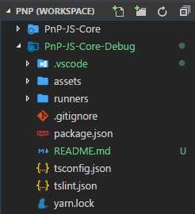
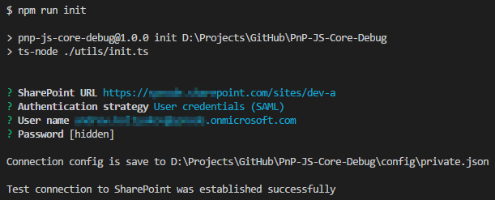
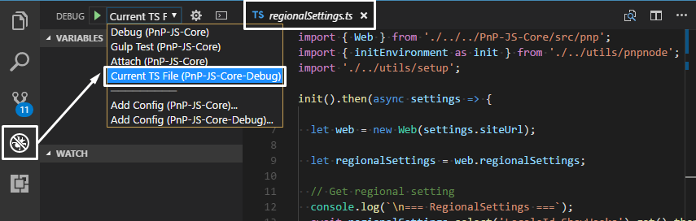
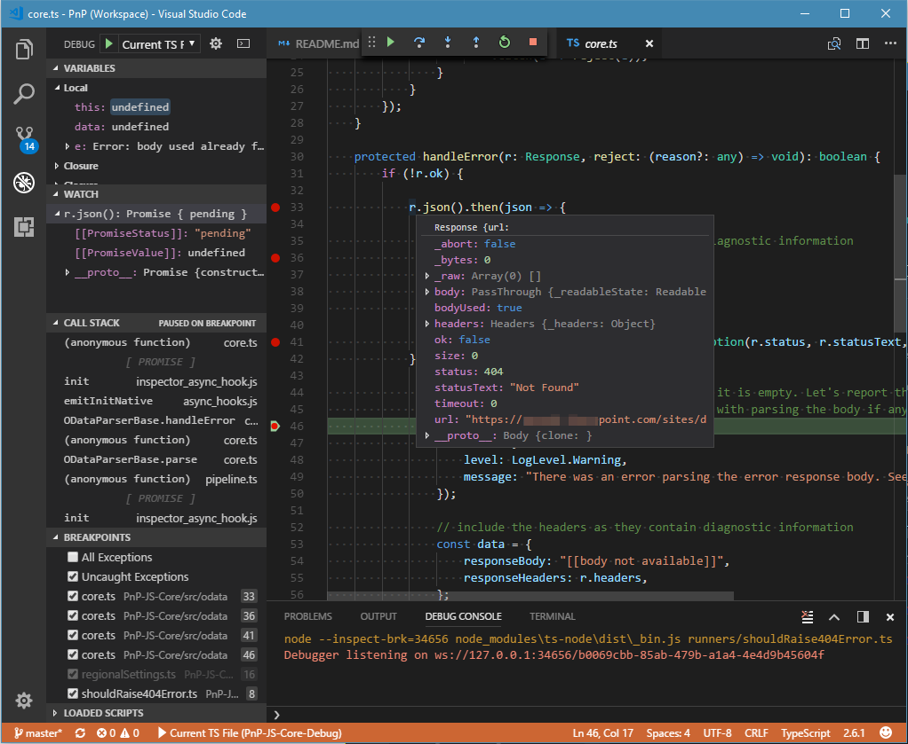

Contribution to PnP JS Core: Debugging source code changes
While contributing to the Open Source project one should follow blueprints of the community project at the same time integrate his development workflow effectively.
This post is about the way I use to debug library when contributing to PnP JS Core. The same techniques can be applied to any TypeScript project. But as the SharePoint development has its nuances setup is unique in some parts.
I really hope to inspire you to contribute to Open Source too.
PnP JS Core Debug
PnP JS Core Debug is a helper project which allows debugging local sources of PnP JS Core right in TypeScript with live requests to SharePoint environment in Node.js.
Prerequisites
These libraries are required for developing PnP JS Core and should be installed globally:
- Node.js
- TypeScript
- TSLint
- Gulp
npm install typescript tslint ts-node gulp -g
Fork projects
Before go changing sources these project should be forked.
First one is the repo with sp-pnp-js itself, the second is a separate project, which helps to separate library unrelated code and, at the same time, keep track of these changes as they can be important for a contributor.
Clone the forks
Projects' folders should be located in the same root folder.
git clone https://github.com/[namespace]/PnP-JS-Core
git clone https://github.com/[namespace]/PnP-JS-Core-Debug
[namespace] stands for you or your company GitHub account.
Separation of the sources makes your commits cleaner automatically, as you only change the actual part of the library.
Debug project is linked with source project in such a way, that no ahead of time transpilation is needed, no npm link is needed. Once added or changed the method in the library is immediately effected in debug project (even with IntelliSense). Here is the power of TypeScript.
Install dependencies
Dependencies should be restored in both projects' folders:
npm install
or
yarn install
I personally still prefer yarn over npm (even v.5). It still faster and works perfectly for me.
VS Code is our editor of choise
Open both projects in VS Code. Workspaces are the best option here.

This new workspace feature allows opening multiple folder-projects in one instance of VS Code. It's especially handy in our case of applying changes in the lib's project and another one to running debug stuff.
Upstream for PnP JS Core
Add upstream for PnP JS Core (a one-time operation).
In PnP JS Core's folder:
git remote add upstream https://github.com/SharePoint/PnP-JS-Core
This will allow syncing your repository sources with main repo with:
git fetch upstream dev
Feature branch
It's recommended using feature branches for code changes related to a specific feature or bug fix.
Before creating a feature branch make sure:
- A feature branch is based on PnP JS Core
devbranch. - The local branch is synced with remote
upstreambranch (this can be done with feature branch too).
git checkout dev
git fetch upstream dev
git checkout -b [name_of_your_new_branch]
It's better to prefix feature branch with dev-.
Connecting tools with SharePoint
On first run SharePoint environment connection should be initiated:
Run npm task
npm run init
You'll be prompted with SharePoint web URL and credentials, just follow the wizard:

Read more about supported auth scenarios.
Configuration files
Connection is saved to config files which are better to exclude from a git repository.
By default config path is ./config/private.json. Passwords in configs are stored in an encrypted way.
Config sample:
{
"siteUrl": "https://contoso.sharepoint.com/sites/dev-a",
"strategy": "UserCredentials",
"username": "andrew.koltyakov@contoso.onmicrosoft.com",
"password": "bcccd4e6025...ZH+ZY5X2A=="
}
Making changes
Now you can apply changes to PnP JS Core project sources (your local copy).
Follow Getting Started: Contribute wiki page's instructions.
Debugging with PnP JS Core Debug
In PnP-JS-Core-Debug/runners project's folder create a .ts file.
Wrap file with:
import { Web } from './../../PnP-JS-Core/src/pnp';
import { initEnvironment as init } from './../utils/pnpnode';
import './../utils/setup';
init().then(async settings => {
let web = new Web(settings.siteUrl);
// executing methods to test
}).catch(console.log);
Place debug break points in PnP JS Core .ts sources or your custom code.
Open a runner which executes logic to test and start a debugger for the current file.

Now all the power of VS Code debugger is our oyster!

As usual, feel free ask questions in Gitter chat.